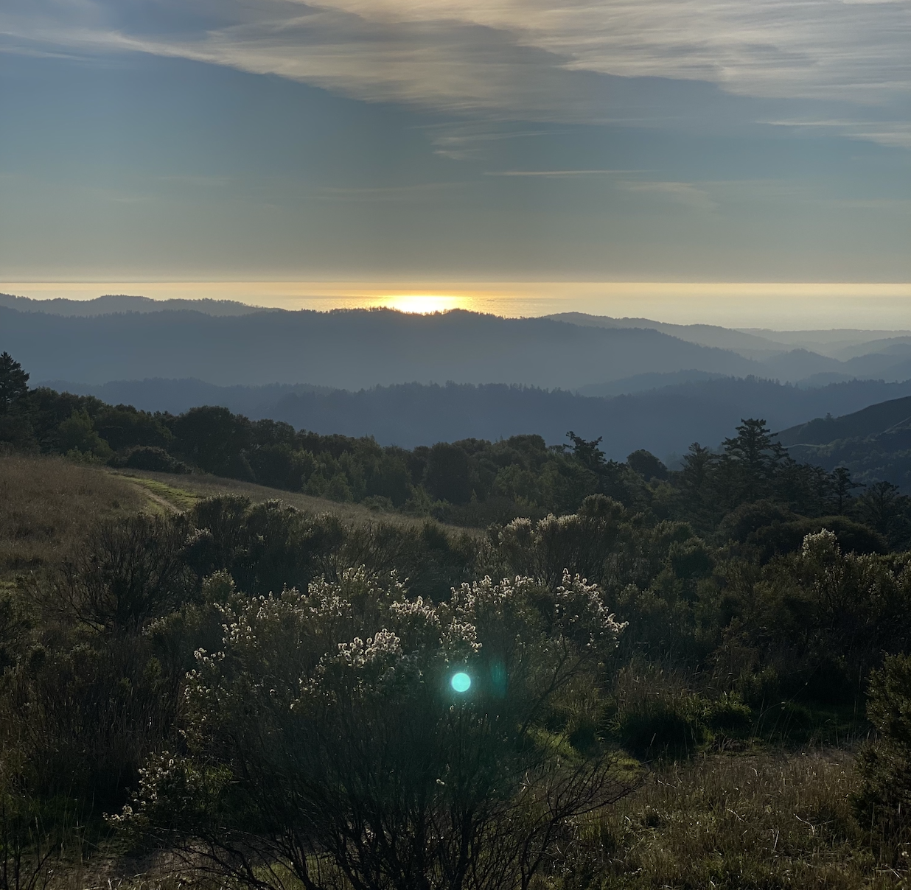

The Secret to Superhuman Strength
Alison Bechdel, check your P.O. box, PLEASE.
July 25th, 2024
8/19/24 UPDATE: She checked!!! Jump to update.
Today I'm driving to the post office, crossing my fingers and toes hoping my letter makes it to Vermont. I'm memorializing this moment by pasting it line by line into an HTML document and hitting git commit in case it never makes it.
The letter.
July 25, 2024
Dear Alison,
I finally got around to sending you snail mail! I originally wrote this letter as an email back in May of this year and sent it to my women's history professor at UC Berkeley, to forward to you. Respecting your wishes, she didn't send my email to you verbatim, so I set out to write you an old-fashioned letter and send it across the nation via our trusty USPS from California to Vermont when I finally mustered up enough hope that you might one day receive and read it. So here goes:
I read The Secret to Superhuman Strength this year (actually finishing it on May 4th, its third anniversary and also, coincidentally my 20th birthday!) and the whole time I was reading it I kept getting more and more excited by just how much I identified with... pretty much everything. The most resounding part of it wasn't even growing up queer, though that was part of it, but your references to things that influenced your life: the Dharma Bums by Jack Kerouac (I know you're not a fan but my friend gave me my second copy of On the Road for my 20th birthday), poet Gary Snyder (I took his book of poems + Japanese block prints The High Sierra of California to Lake Tahoe over winter break), the Whole Earth Catalog (!!!, I'll get to later), our commitment to Patagonia technical wear (bad for my college student bank account), and the constant call (craving?) and spirituality of the mountains (like your Allegheny mountains, the mountains I dream of are the fog and redwood-covered Santa Cruz mountains that I can see from my parents' house). Like how I read Fun Home and Are You My Mother?, while reading Secret, I messaged so many library ebook screenshots to my friends over a two-day period that they had to put me on mute.
This whole time I considered my identity and obsession with the hippies of the 1960s, the Whole Earth Catalog (As a Computer Science major, I first learned about it in high school from Steve Jobs' Stanford commencement address. I also bought myself my very own The Last Whole Earth Catalog online as I walked out of my professor's office hours the day we talked about you.), and Jack Kerouac's freewheeling-ness as separate interests, but the timing of suddenly finding a shelf full of Whole Earth Catalogs behind my chair while studying in Berkeley's Environmental Design library one day the same time I was reading Fun Home felt truly magical and was something I hoped to share with you. To top it all off, reading Secret at the end of the semester and on my birthday and its third publishing anniversary made me think that the universe tried extra hard this time around by putting all these crazy coincidences together for me. That's what I like to believe.
With this, I wanted to 1) share with you your impact on my life this past year (and throw in a “OMG, I just love your work!”, I'm sure you get that enough) and 2) ask you what you think the connection between us and this general collection of people, movements, and things might be. It's like how you said the best way to define transcendentalism is to point at the Whole Earth Catalog and say “Well... this”. To me, the best way to represent my personal transcendence is to point at The Secret to Superhuman Strength and say “Well... this”.
One last thing: I spotted that poster of k.d. lang on the cover of Absolute Torch and Twang in the panel of you working in the queer magazine's office in Secret on page 135! To say that I'm obsessed with her would be an understatement. My Shadowland CD is right next to my copy of Secret on my bookshelf. I know my professor likes her music too and the Donovan quote on the very first page was the first screenshot I sent to my friends, so I'd also love to know about the music you like listening to.
I'll be here in California praying this letter reaches you. I hope the informality of my writing was legible enough; as a CS major, I'm the closest you can get to illiteracy without being illiterate, and rambling and tangents is how I write. I always argue it's like how Kerouac's writing is like jazz improvisation!
Thank you for taking the time to read this and I would love to hear from you one day! If you're so inclined, you can email me at sophia.w.liu@gmail.com and my return address is on the envelope. Here it is again, just in case:
[redacted]
Sincerely,
Sophia Liu
As a bonus since this letter traveled all this way:

A picture I took of the Pacific Ocean and the Santa Cruz Mountains at the Russian Ridge Preserve in December 2021
And of course, it's never a blog post unless I include a Spotify embed. Here's the playlist I made while reading The Secret to Superhuman Strength by Alison Bechdel:
Here's when the Whole Earth Catalog was introduced in the book:
I knew exactly what Bruce Bechdel's curious book was.
I stayed in a yurt in Tahoe this past weekend. Next is a Fullerian geodesic dome! Also, Easy Rider was amazing.
Back to top.
8/19/24 UPDATE: I've updated three blog posts within the past two days because this is my post-internship, pre-semester chill time, but this update is probably the most worthy of an "MM/DD/YY UPDATE:". You'll have to give me a moment, I'm still dealing.
This morning, as I checked my email during my obligatory morning in-bed phone time, I mindlessly opened the daily USPS Informed Delivery email in my inbox expecting the usual scans of junk mail and serious adult mail addressed to my parents. However, in my mind was also the smallest glimmer of hope that there might be something special addressed to me (as one often does when they check both their virtual and physical mailbox).
And, WHAT LUCK! I was right.
What I saw in the USPS email. Shocked I was! Shocked!
Post-Safeway-run I opened our mailbox to find the same pieces of mail I saw in the USPS email. Wrapped in a home renovation catalog was Alison's postcard.
Yes, it's in a picture frame. I went out and bought it right after I finished marinating the chicken.
The USPS emails only show one side of each mail item, so I didn't expect much for the other side of the postcard. I thought, maybe a generic nature or city scape, and if I'm lucky, maybe something relevant to what I wrote in my letter.
When I turned the postcard over, it was something a million times better than what I could've ever hoped for.
A hand-drawn Alison Bechdel 6x4 original! Just for me! She even colored the little flowers purple.
I cried.
Thanks, Alison. You are so cool. I'll be waiting for your next book. And thank you, Sury, for sending me this week's This American Life episode: "Letters! Actual Letters!"
Moral of the blog post, send the letter! Do the thing!